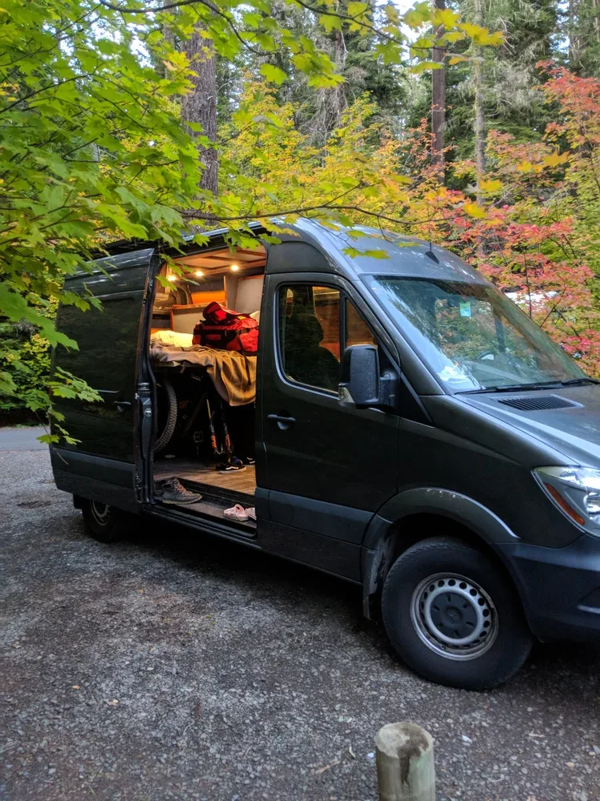
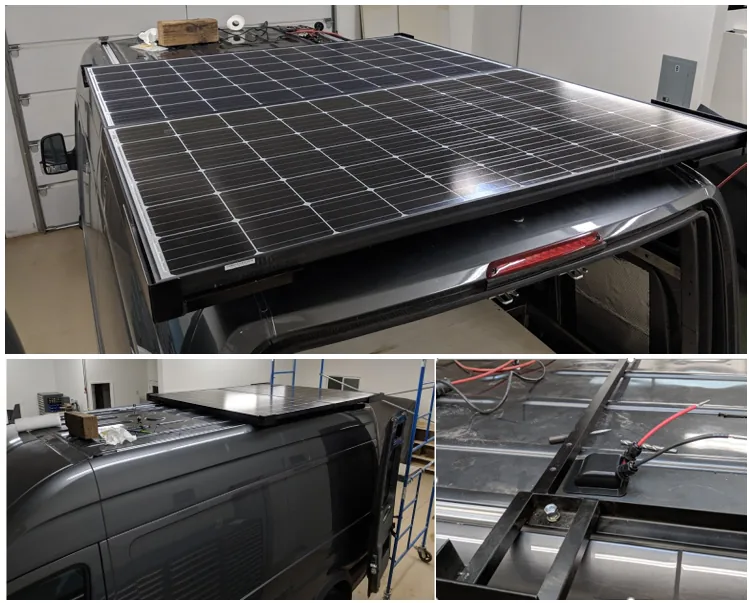
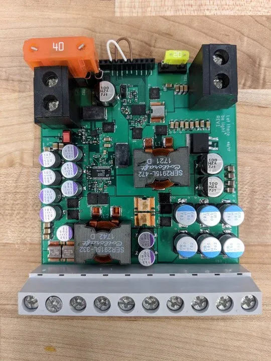
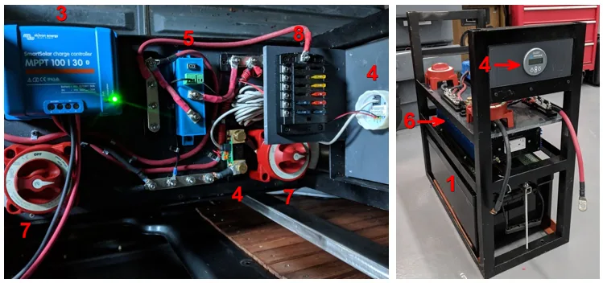
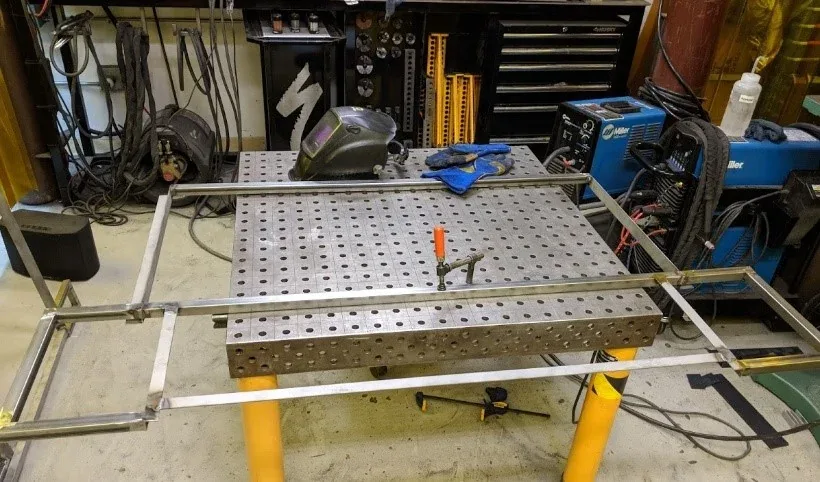
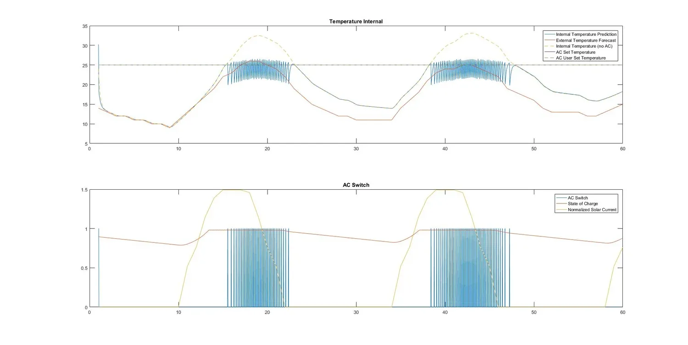
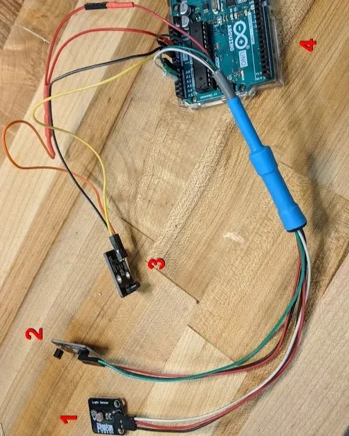
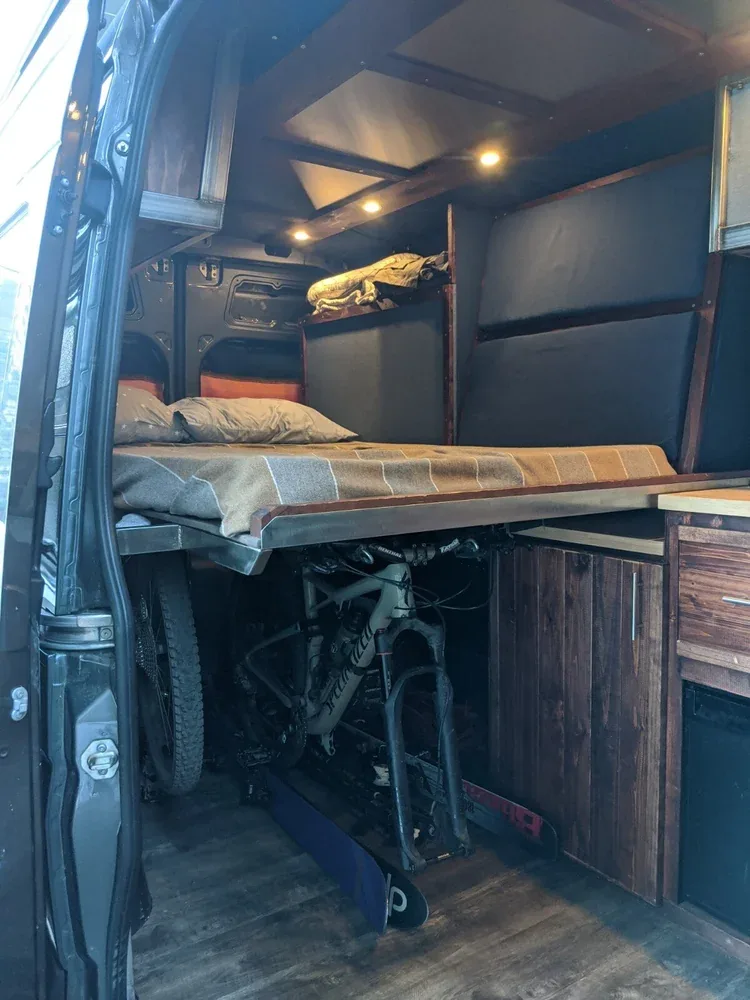
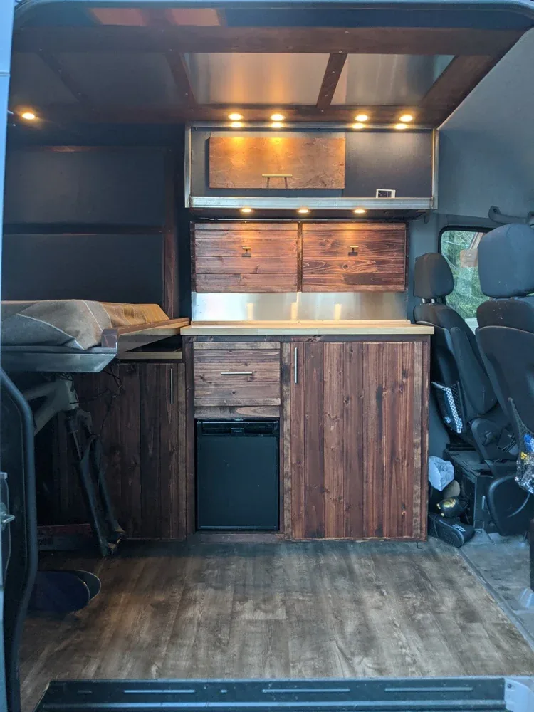
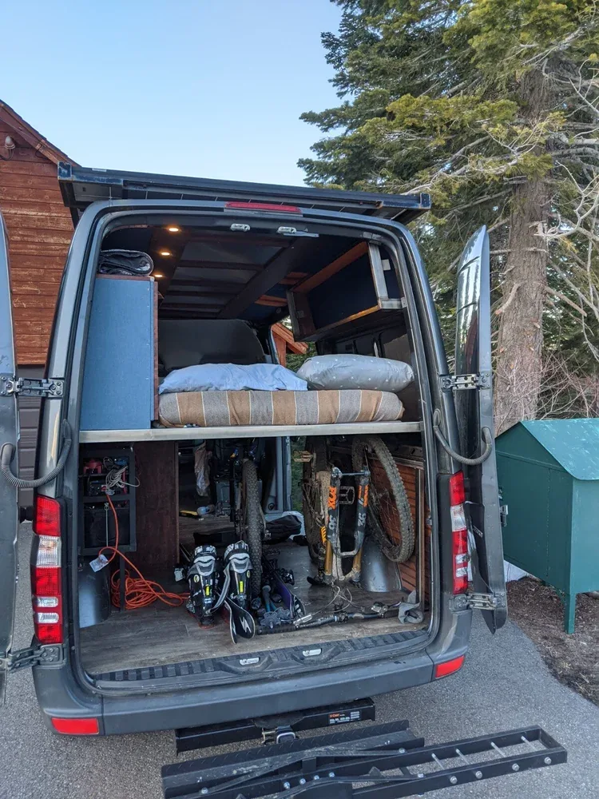

Net-Zero Sprinter — Master's Thesis
My master's thesis: design, fabricate, and implement a net-zero energy platform for a mobile residence — and then build the thermal and electrical model that lets it make decisions about its own energy use.
The hardware is a complete off-grid energy system on a Sprinter van: two 275 W Canadian Solar panels on MIG-welded steel mounting frames, a Victron SmartSolar MPPT charge controller, a 260 Ah LiFePO4 battery, a 2,000 W inverter, and a custom electrical containment box housing the battery management, disconnects, and load lines. The goal was a self-sufficient platform for off-grid living and exploring.





The second half of the thesis is a model. Using acquired thermal data, I built a thermal and electrical model of the van in MATLAB that predicts interior temperature from forecasted conditions, and tells the user how a desired set-point temperature will affect how long the system's stored solar energy lasts. It closes the loop from weather forecast → thermal response → battery state of charge, so the platform can inform real energy-use decisions.




